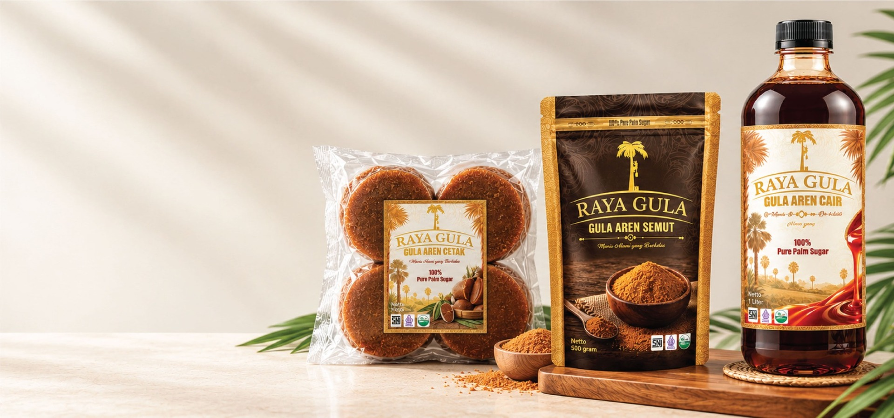

RAYA JOURNAL
Gula Aren untuk KopiPalm Sugar for Coffee
Rasa alami yang melengkapi karakter kopi.Natural sweetness that complements coffee.

Ada hari-hari ketika kita membutuhkan jeda sederhana untuk menarik napas. Mungkin pagi baru saja dimulai dan daftar pekerjaan sudah menunggu, atau sore terasa panjang setelah berjam-jam beraktivitas. Di saat seperti itu, secangkir kopi yang diseduh dengan tenang bisa menjadi teman kecil yang menyenangkan. Aroma kopi perlahan memenuhi ruangan, uap hangat naik dari cangkir, dan untuk sesaat kita punya waktu untuk menikmati sesuatu tanpa terburu-buru.Some days call for a simple pause and a moment to breathe. Perhaps the morning has barely begun and a long list of tasks is already waiting, or the afternoon feels endless after hours of activity. At times like these, a carefully brewed cup of coffee can be a welcome companion. Its aroma slowly fills the room, warmth rises from the cup, and for a little while, there is time to enjoy something without rushing.
Dalam momen sederhana itu, gula aren menghadirkan karakter yang berbeda dari rasa manis biasa. Aroma khasnya dan nuansa karamel memberi kesan hangat serta membulatkan rasa kopi. Bukan untuk menyamarkan karakter biji kopi, melainkan untuk melengkapinya. Hasil akhirnya tetap tentang kopi yang kita sukai—hanya dengan sentuhan rasa yang lebih lembut dan bersahaja.In that simple moment, palm sugar brings a character of its own. Its distinctive aroma and caramel-like notes create a warm impression and round out the taste of coffee. It is not there to disguise the beans, but to complement them. The result remains a cup of coffee you love, touched with a softer, more grounded sweetness.
Tidak semua kopi memiliki rasa yang sama. Kopi tertentu terasa pekat dengan nuansa cokelat dan kacang, sementara yang lain lebih cerah, dengan kesan buah atau bunga. Ada pula kopi yang meninggalkan rasa rempah dan panggang yang bertahan lama. Mengenali karakter ini membuat kita lebih mudah menentukan cara menikmati kopi, termasuk memilih pemanis yang sesuai.No two coffees taste exactly alike. Some are bold, with notes of chocolate and nuts; others feel brighter, with hints of fruit or flowers. Some leave a lingering impression of spice and roast. Getting to know these characteristics can help you decide how to enjoy your coffee, including which sweetener best suits it.
Gula aren cocok dijadikan bahan eksplorasi karena rasa manisnya memiliki kedalaman tersendiri. Pada kopi dengan karakter cokelat atau kacang, sentuhan karamel dapat terasa serasi. Pada kopi yang lebih ringan, gunakan sedikit saja agar karakter aslinya tetap menonjol. Anggaplah setiap cangkir sebagai kesempatan untuk mengenal bahan yang digunakan, bukan sekadar minuman yang harus dibuat sama setiap hari.Palm sugar is an interesting ingredient to explore because its sweetness has depth of its own. Its caramel notes can work beautifully with coffees that lean towards chocolate or nuts. With lighter coffees, a smaller amount helps the original character remain noticeable. Think of each cup as a chance to get to know the ingredients, rather than a drink that must taste exactly the same every day.
Jika menyukai kopi hitam, mulailah dengan menambahkan sedikit gula aren setelah kopi diseduh. Aduk hingga larut, lalu cicipi sebelum menambahkan lagi. Cara ini membantu menjaga aroma seduhan tetap terasa. Untuk latte atau kopi susu, rasa gula aren dapat berpadu dengan kelembutan susu, menghadirkan minuman dengan rasa yang akrab dan sedikit sentuhan karamel. Sementara itu, es kopi bisa terasa lebih seimbang ketika rasa manisnya tidak berlebihan dan aroma kopinya masih jelas.If you enjoy black coffee, begin by adding a little palm sugar after brewing. Stir until dissolved, then taste before adding more. This helps preserve the aroma of the coffee. In a latte or milk coffee, palm sugar blends with the creaminess of milk to create a familiar flavour with a gentle caramel note. Iced coffee can feel just as balanced when the sweetness is restrained and the coffee remains distinct.
Untuk minuman dingin, gula aren yang dilarutkan menjadi sirup biasanya lebih mudah tercampur daripada gula yang langsung dimasukkan ke gelas berisi es. Siapkan larutan secukupnya, simpan dengan bersih dalam wadah tertutup, dan gunakan sesuai kebutuhan. Tidak perlu membuat minuman yang rumit: kopi, susu bila disukai, es, dan gula aren dalam takaran yang pas sudah bisa menjadi sajian yang menyenangkan.For cold drinks, palm sugar dissolved into a syrup usually mixes more easily than granules added straight to a glass of ice. Prepare only what you need, keep it in a clean, covered container, and use it as required. There is no need for a complicated recipe: coffee, milk if you like, ice, and a balanced amount of palm sugar can make a satisfying drink.
Takaran yang terasa pas bagi satu orang belum tentu cocok bagi orang lain. Mulailah dari jumlah kecil, cicipi, lalu tambahkan perlahan jika memang diperlukan. Perhatikan juga metode seduh, kekuatan kopi, suhu minuman, dan tambahan seperti susu. Semua unsur tersebut dapat memengaruhi bagaimana rasa manis terasa di lidah.The amount that feels right for one person may not suit another. Start small, taste, and add a little more only if needed. Consider the brewing method, coffee strength, serving temperature, and additions such as milk. Each of these can change how sweetness comes through.
Jika sedang mencoba kombinasi baru, ubah satu hal pada satu waktu. Misalnya, gunakan kopi yang sama lalu bandingkan dengan sedikit gula aren dan dengan takaran yang sedikit lebih banyak. Dengan begitu, kita dapat mengenali perbedaan rasa tanpa menebak-nebak. Catatan kecil tentang takaran favorit juga berguna saat ingin membuat kembali minuman yang sama.When trying a new combination, change one thing at a time. Brew the same coffee and compare it with a little palm sugar, then with a slightly larger amount. This makes it easier to notice the difference instead of guessing. A small note of your favourite measurements can also help you recreate a drink you enjoyed.
Membuat kopi di rumah tidak harus selalu mengejar hasil yang sempurna. Ada kesenangan dalam menggiling biji, memilih cangkir, mencium aroma seduhan, dan menemukan kombinasi yang paling kita sukai. Gula aren hanyalah salah satu cara untuk mengeksplorasi rasa; yang terpenting adalah memberi ruang bagi kopi dan selera pribadi untuk berbicara.Making coffee at home does not have to be a pursuit of perfection. There is pleasure in grinding the beans, choosing a cup, taking in the aroma, and discovering a combination you truly enjoy. Palm sugar is simply one way to explore flavour; what matters most is giving the coffee and your own preferences room to speak.
Pada akhirnya, secangkir kopi yang berkesan tidak selalu membutuhkan alat mahal atau resep panjang. Kadang, bahan yang tepat, sedikit perhatian, dan beberapa menit untuk menikmati jeda sudah cukup. Itulah keindahan rasa alami: sederhana, akrab, dan mudah menjadi bagian dari keseharian.In the end, a memorable cup does not always require expensive equipment or a lengthy recipe. Sometimes the right ingredients, a little care, and a few minutes to pause are enough. That is the beauty of natural flavour: simple, familiar, and easy to make part of everyday life.